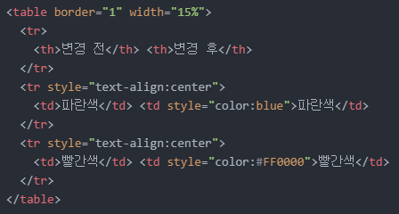
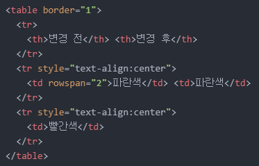
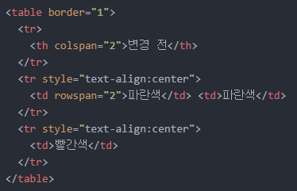

홈으로
<2021년 8월 28일 토요일>
1. 오늘의 목표
- 글자 색상 변경
2. 목표 실천하기
오늘은 글자의 색상을 바꿔보려고 합니다.
모든 글자가 검은색으로만 칠해져 있으니 뭔가 멋이 없는 것 같아서요.
글자 색상을 변경하기 위해선 'style' 속성을 이용하면 된다고 합니다.
이제 겨우 3일째지만 'style' 속성이 정말 유용하다는 것이 느껴집니다.
색상을 변경하고자 하는 글자가 있는 태그 내에 'style="color:원하는 색상"'을 써주면 됩니다.
이때, 원하는 색상에 대한 정보를 입력하는 방법이 몇 가지 있는데 그중 가장 편해보이는 두 가지 방법만 사용하려고 합니다.
- 원하는 색상의 이름을 그대로 입력하기 ex) 만약 파란색이라면, 'style="color:blue"'
- 원하는 색상을 나타내는 16진수 코드 ex) 만약 파란색이라면, 'style="color:#0000FF"'
어제 공부했던 표를 복습 겸 한 번 만들어서 글자의 색상을 변경해보겠습니다.
| 변경 전 | 변경 후 |
| 파란색 | 파란색 |
| 빨간색 | 빨간색 |
파란색은 첫 번째 방법을, 빨간색은 두 번째 방법을 이용했습니다.
이는 아래 코드를 보고 확인하실 수 있습니다.

보이시나요? 파란색은 이름 그대로 'blue'로, 빨간색은 16진수 코드인 '#FF0000'으로 표현했습니다.
음..이렇게나 빨리 목표를 달성했네요.
그런데 새로운 목표가 생겼습니다.
위 표를 만들면서 문득 어떤 생각이 들었습니다.
위 2×3 크기의 표를 3×3 크기로 만들고 가장 왼쪽 열의 두세 번째 셀을 병합하여 '색상'이라는 단어를 입력해보고 싶더군요.
그래서 바로 검색의 힘을 빌렸습니다.
찾아보니 'rowspan' 속성과 'colspan' 속성을 이용하라고 하네요.
그런데 조금 직관적인 이해가 필요하더군요
row는 행을, col은 column의 줄임말로 열을 나타냅니다.
그래서 'rowspan' 속성은 행을 병합하고 'colspan' 속성은 열을 병합합니다.
하지만! 이때, 행을 병합한다는 것은 가로로 병합하는 것이 아니라 세로로 병합한다는 뜻입니다.
열을 병합한다는 것은 세로로 병합하는 것이 아닌 가로로 병합한다는 뜻입니다.
그리고 'rowspan' 속성을 적용시키는 셀이 기준이 되며, 이 기준셀 아래 방향으로 병합을 하게 됩니다.
'colspan' 속성의 경우도 해당 속성을 적용시키는 셀이 기준이 되며, 이 기준셀 우측 방향으로 병합을 하게 됩니다.
또, 코딩할 때 속성을 적용시키는 셀 외에 병합 대상이 되는 셀(들)에 대한 코드는 작성하지 않으셔도 됩니다.
예시를 위해 '변경 전' 셀 아래 두 셀에 'rowspan="2"'를 적용시켜보겠습니다.
'rowspan="2"' 즉, 2개의 행을 세로 방향으로 병합한다는 의미입니다.
아래는 해당 코드입니다.

보시다시피, 병합 대상이 되는 셀에는 아무런 코드도 작성되지 않았음을 알 수 있습니다.
그럼 이번에는 '변경 전'과 '변경 후' 두 셀을 병합해보겠습니다.
열과 열의 병합이니까 'colspan' 속성을 사용해야겠죠?
그 결과는 아래와 같습니다.
그리고 해당 코드는 아래와 같습니다.

그러면 조금 전에 언급했듯이 3×3 크기의 표를 만들어 가장 왼쪽 열의 두세 번째 셀을 병합하여 '색상'이라는 단어를 입력해보겠습니다.
| 변경 전 | 변경 후 |
| 색상 | 파란색 | 파란색 |
| 빨간색 | 빨간색 |
오늘의 목표를 모두 달성했습니다.
지금까지 작성한 코드를 보시려면 마우스 우클릭 후 '페이지 소스 보기'를 클릭하시면 됩니다.
그럼 내일도 화이팅!
홈으로